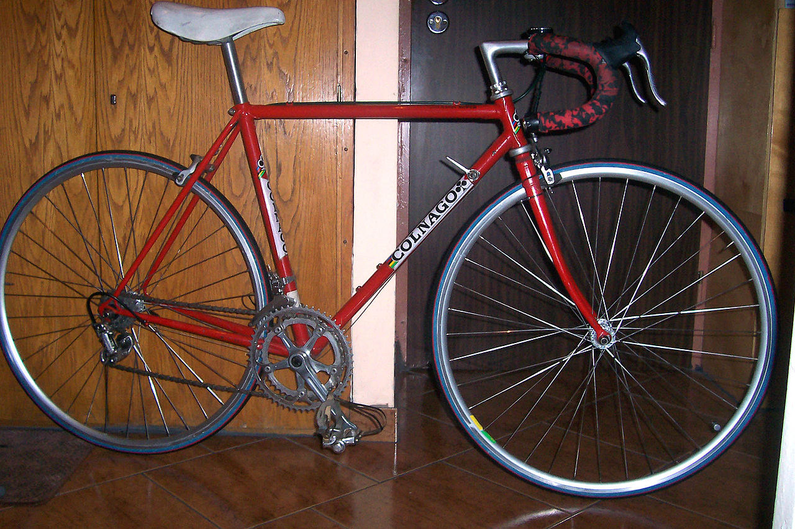
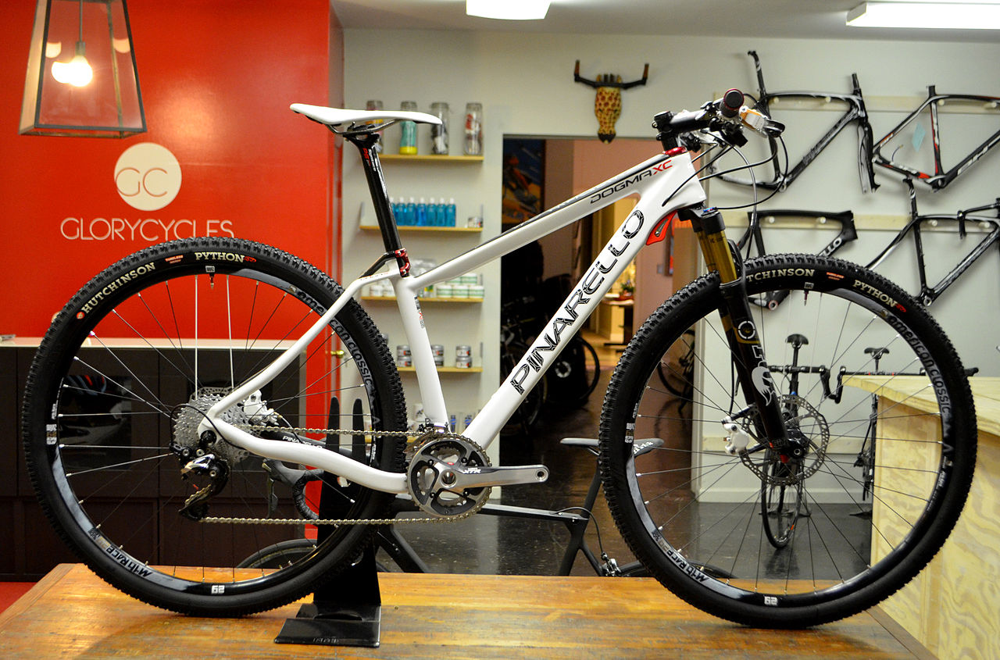

Rower miejski

Rower przeznaczony do jazdy w mieście.
Tradycyjny rower miejski, tak zwany holender, zbudowany jest najczęściej na kołach 28-calowych (choć spotyka się również rowery z kołami 26- i 27-calowymi), posiada giętą, szeroką kierownicę, krótką ramę i szerokie siodełko umożliwiające jazdę w pozycji wyprostowanej. Posiada on też zwykle lampki zasilane z dynama, komplet błotników, osłonę na łańcuch, nóżkę, bagażnik tylny, czasem osłonę tylnego koła czy koszyk.
Rower górski
Rowery, których przeznaczeniem jest jazda w terenie trudniejszym, niż pozwalają na to rowery szosowe czy trekingowe, np. górskie ścieżki, szlaki leśne, specjalne tory przeszkód.
W porównaniu do rowerów szosowych oraz trekkingowych, rowery MTB są cięższe, ze względu na mającą gwarantować większą wytrzymałość konstrukcję. Rowery górskie, celem poprawy przyczepności i możliwości pokonania szybko i bezpiecznie wymagającego terenu (rock gardeny, rampy) w rowerach profesjonalnych oraz komfortu jazdy w rowerach amatorskich i turystycznych, bardzo często wyposaża się w różnego rodzaju amortyzatory, które również mają istotny wpływ na masę pojazdu. Amortyzatory instaluje się głównie w widelcu i ramie; amortyzowane sztyce siodełka i mostki nie są popularne w rowerach profesjonalnych, ale wciąż można je spotkać w rowerach turystycznych i starszych rowerach profesjonalnych. W ostatnich czasach coraz częściej używa się sztyc opuszczanych. Spotyka się je u zawodników wyścigów XC.
Rower szosowy
Sportowy rower, dostosowywany przede wszystkim do jazdy na twardej drodze.
Klasyczny układ napędowy składać się musi z zespołu zębatek przednich napędzanych bezpośrednio za pomocą nóg przy pomocy korb i pedałów. Zębatki przednie są połączone łańcuchem z zespołem zębatek napędzających bezpośrednio tylne koło. Ograniczenia dotyczące rozmiarów zębatek dotyczą młodszych kategorii wiekowych.